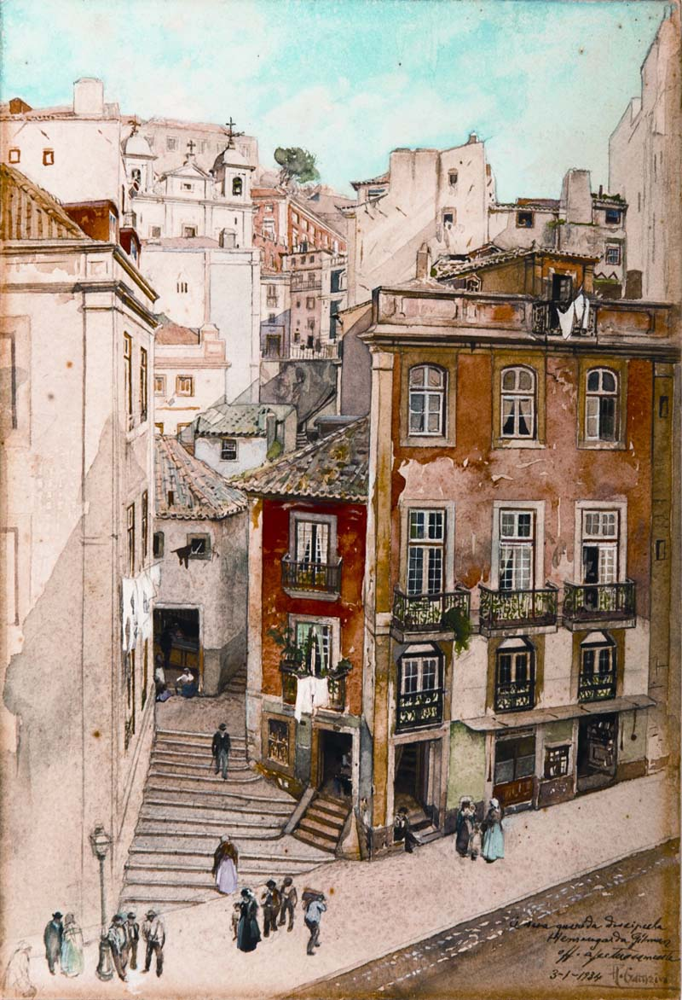

Welcome to Comunidade de Lisboa
Inicio
2020.10.21 09:16
Skip to content
CORONAVIRUS/COVID-19: Hard Rock has an important message to our fans: Learn More
COVID-19: Learn More
X click to close Hardrock.com Cafes Hotels Casino Rock Shop Order Pickup Order Delivery Reserve a Table ×Reservations
Hard Rock Rewards Go to This Location Find Another Location Toggle navigation Menu Locations Parties & Events What's Happening Gift Cards Shop Pickup Delivery ReservationsLISBOA
LISBOA
Phone Icon Email Icon Email Us Address Icon SocialMedia1 Icon Make a ReservationPowered by
Veja o nosso Menu! may link to PDF document Menu Family Bundles may link to PDF document Entrega Uber Eats may link to PDF document MENU HAPPY HOUR may link to PDF document Menu Sem Glúten may link to PDF document CATÁLOGO ROCK SHOP may link to PDF document Idioma Language Dropdown EnglishWelcome to Hard Rock Cafe Lisbon
DESFRUTE DE UMA EXPERIÊNCIA ÚNICA VEJA O NOSSO MENU ENTREGA AO DOMICÍLIO ENCOMENDA AGORAHARD ROCK CAFE LISBOA
Inaugurado a 12 de Junho de 2003
Reabrir portas é música para os nossos ouvidos!
Em conformidade com as recomendações das autoridades de saúde locais, o Hard Rock Cafe Lisboa reabriu! A empresa continua a tomar precauções para assegurar a segurança dos seus clientes e equipa e implementou processos aprimorados de limpeza e medidas de distanciamento social, incluindo:
1. Ajude-nos a respeitar o distanciamento correto de dois (2) metros
2. Utilize máscara ao entrar no restaurante pela primeira vez até chegar à mesa
3. Agradecemos pagamentos contactless e reserva de mesa com antecedência
Clique aqui para mais detalhes.
LISBON, LET'S ROCK!
Lisboa, a deslumbrante cidade que se estende ao longo das margens do rio Tejo até ao oceano Atlântico, é a capital portuguesa desde 1255: o que faz com que seja a segunda capital mais antiga da Europa. O encanto da cidade das sete colinas reside nas fortes ligações desta com o passado: os palácios restaurados, as majestosas igrejas, e o imponente castelo da cidade situado no topo de uma das colinas que reflecte o rico património cultural de Lisboa. O Hard Rock Cafe Lisboa, localizado no centro da cidade (na Avenida da Liberdade em frente à Praça dos Restauradores), oferece uma experiência de descoberta dos tempos modernos e irá transportá-lo para um ambiente cheio de energia e da nossa preciosa memorabilia de música.
HORÁRIO RESTAURANTE
Seg – Dom 12:00 – 23:00
HORÁRIO ROCK SHOP
Seg – Dom 10:00 – 23:00
Boa comida – entretenimento ainda melhor!
Desde as praias até aos locais históricos, Lisboa oferece um leque variado de coisas maravilhosas para ver e fazer. Quando precisar de uma pausa nas suas caminhadas e fotografias, visite o Hard Rock Cafe para uma bebida refrescante, desfrutar de óptima comida, das novas tendências de moda na nossa loja, e usufruir do nosso famoso e amigável serviço. O cafe oferece dois andares com uma decoração elegante, onde vai poder saborear o melhor da cozinha americana e alguns sabores locais, bem como desfrutar do nosso bar onde os nossos bartenders preparam deliciosos cocktails de manhã à noite. Não se esqueça de durante a sua refeição aproveitar para saber mais acerca da nossa memorabilia e de todas as novidades colecionáveis da nossa Rock Shop®.
View our Modern Slavery Statement
Evento Infantil de Halloween 1 Novembro 2020
O Halloween está a chegar com direito a muitos gritinhos e sustos!👻Na manhã do dia 1 de Novembro , vamos pregar sustos aos mais pequenos com uma história de Halloween "assustadora" contada e cantada pela “bruxinha” Pipa e pelo “fantasminha” Dino: : A História da Maria, que era bruxa e não sabia!
Este evento tem a opção para assistir à história de Halloween apenas ou pacote com história de Halloween e almoço. Todas as crianças receberão um brinde da Coca-Cola à chegada.
Um momento de "assustadora" diversão para os mini rock stars com toda a segurança e lotação reduzida. Reserve Já!
O BANQUETE PARA TODA A FAMÍLIA!
O nosso novo menu Family Bundles é um banquete para toda a mesa 🍟🍗 De 1 de Outubro a 22 de Novembro, traga os seus amigos e família ao #HardRockCafe para experimentar o nosso novo menu Family Bundles! Compartilhe qualquer um dos deliciosos pratos deste menu servidos em tamanho famíliar, até cinco pessoas, para um banquete lendário🍗 🍔 🤘
Veja o Menu aqui
RESERVE JÁ A SUA MESA!Oferta Refeição Crianças
Depois do regresso às aulas, queremos que as crianças aproveitem a vida na cidade novamente e se divirtam.
É por isso que as crianças comem de graça no Hard Rock Cafe Lisboa !!
Basta mencionar a palavra de código ´ KIDS ´ ao seu server para obter a oferta com a compra de um prato principal de adulto, e usufruir de uma refeição infantil grátis (até 10 anos).
Oferta válida aos sábados e domingos até às 17h00, até ao final de novembro de 2020.
Reserve Já!PINKTOBER
A campanha PINKTOBER marca mais de duas décadas de apoio do Hard Rock para divulgar e consciencializar para esta importante causa.
Este ano, poderão encontrar na Rock Shop do Hard Rock Cafe® Lisboa artigos de merchandise com design exclusivo e de edição limitada, incluindo uma máscara facial com a fita rosa universalmente simbólica, bem como um pin de lapela PINKTOBER Pink Ribbon. Estes artigos estão disponíveis para compra nas lojas físicas Hard Rock’s Rock Shop® bem como na Rock Shop online.
10% das vendas serão atribuídas à Fundação Caron Keating para a conscientização do cancro de mama.
ESTAMOS APENAS A UM CLIQUE DE DISTÂNCIA
Vamos levar a festa até si para que a sua próxima refeição em casa seja ainda melhor! Uma seleção do nosso lendário menu está agora disponível para entrega ao domicílio com a Uber Eats.
Encomenda agora e come em casa como uma verdadeira estrela do Rock!
UBER EATSHAPPY HOUR
Happy Hour de segunda a quinta feira (exceto feriados), das 18h00 às 20h00.
Temos um menu de bebidas selecionadas e bar bites a um preço especial.
Venham celebrar a hora mais feliz de todas!
MENU HAPPY HOURADQUIRA HOJE A SUA MÁSCARA FACIAL HARD ROCK!
Mnatenha-se SAFE+SOUND e adquira a sua máscara facial Hard Rock na nossa Rock Shop! Disponível em vários padrões!
Horário de Funcionamento da Rock Shop: Segunda-feira a domingo, das 10h00 às 20h00
OFERTA ESPECIAL NA NOSSA ROCK SHOP
Numa compra mínima de €50.00 na nossa Rock Shop receba esta mochila ou coluna à prova de água por apenas €14.00 adicionais.
Esta oferta é válida apenas em compras na nossa Rock Shop (não disponível online).
DESCONTO DE 10% PARA SÓCIOS ACP
Obtenha 10% de desconto em comida, bebidas não alcoólicas e merchandise mostrando o seu cartão de sócio ACP (válido também para membros de qualquer outro clube automóvel internacional).
A oferta é válida em todos os Cafes europeus participantes.
ROCKIN´THE JOURNEY TOGETHER
Os membros do Harley Davidson Owners Club (H.O.G.) podem desfrutar de 15% de desconto em comida e bebidas não alcoólicas no #HardRockCafeLisboa.
Basta apresentar a sua identificação H.O.G.. Estamos ansiosos para recebê-l@!
Mais informação aqui .
RESERVE JÁ A SUA MESA!🎓 ESCOLA DO HARD ROCK🎓
Já conhecem o nosso programa educativo "Escola do Hard Rock" dedicado a escolas? Desde o ensino pré-escolar até universidades, os nossos alunos terão a oportunidade de conhecer a história do Hard rock e de aprender como o Rock 'n'Roll mudou o mundo! As aulas poderão ser dadas em português ou em inglês. You Rock! #HardRockCafe #SchoolRocks
Peça mais Informações!EVENTOS DE EMPRESA
Está à procura de um local especial para o seu evento de empresa?O Hard Rock Cafe Lisboa é o local perfeito!
Menus de grupo, pacotes de reunião, lançamento de produtos e eventos privados até 450 pessoas são algumas das opções possíveis!
Together We Rock! #HardRockCafe #RockYourEvent
Faça o seu Evento connosco!SEM GLÚTEN? SEM PROBLEMA!
Temos disponível um menu completo sem glúten.Consulte o nosso staff ou diretor de serviço para quaisquer outras questões relativas a restrições ou alergias. Veja Menu aqui!
EVENTOS SOCIAIS
Eventos after work, despedidas de solteiros, menus especiais para grupos e workshops de cocktails. Divirta-se connosco! #HardRockCafe #ShakeItUp
Contate-nos!🎉MENUS DE ANIVERSÁRIO 🎉
Temos disponíveis menus especiais de aniversário para crianças e adolescentes. #Birthdayparties. Pergunte-nos como poderá celebrar o melhor aniversário de sempre!
Reserve Já!MENUS DE GRUPO - AGÊNCIAS DE VIAGENS E ESCOLAS
Se é uma agência de viagens, operador turístico ou escola contate-nos para saber mais informações de menus de grupo a partir de 14 pessoas. #HardRockCafe #Groupbookings
Peça mais Informações!Eventos Futuros
Mais EventosLet's Talk
LisbonCONTATO
Phone Icon Phone Icon Fax: +351-213-245-288 Email Icon Informação GeralCOMO CHEGAR E ESTACIONAR
Car Icon View Information ×COMO CHEGAR E ESTACIONAR
Parking Information:
Car:
Underground parking "Praca dos Restauradores" open 24 hours. Parking also available directly alongside Av. de Liberdade and side streets in surrounding area.Bus:
Arriving and departing from Praca dos Restauradores – Nº: 31, 36, 39, 59, 92 Passing thru Praca dos Restauradores - Nº: 1, 2, 9, 11, 32, 44, 45, 46, 90 From the Airport passing thru Praca dos Restauradores – Nº: 90Metro:
Restauradores (Linha Azul) FOLLOW US: @HARDROCKCAFECafe Hotel Casino
HardRock.com
Connect
Facebook Twitter YouTube InstagramMake Me a Rockstar
Email Address GO Corporate Careers Accessibility Terms News Privacy/CA Privacy Gift Cards Rewards Cookie SettingsCopyright © , Hard Rock Cafe International, Inc.
Scroll to TopPowered by
